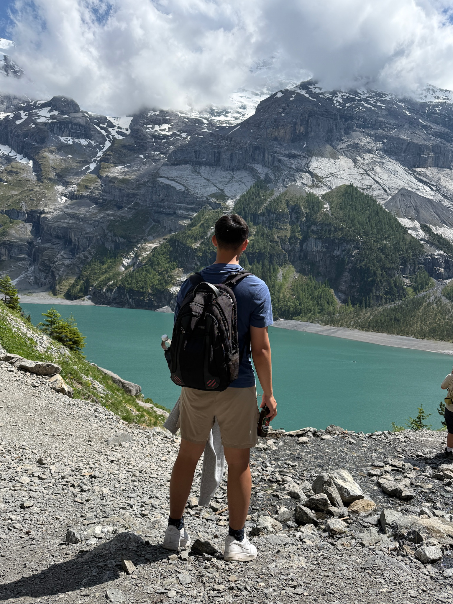
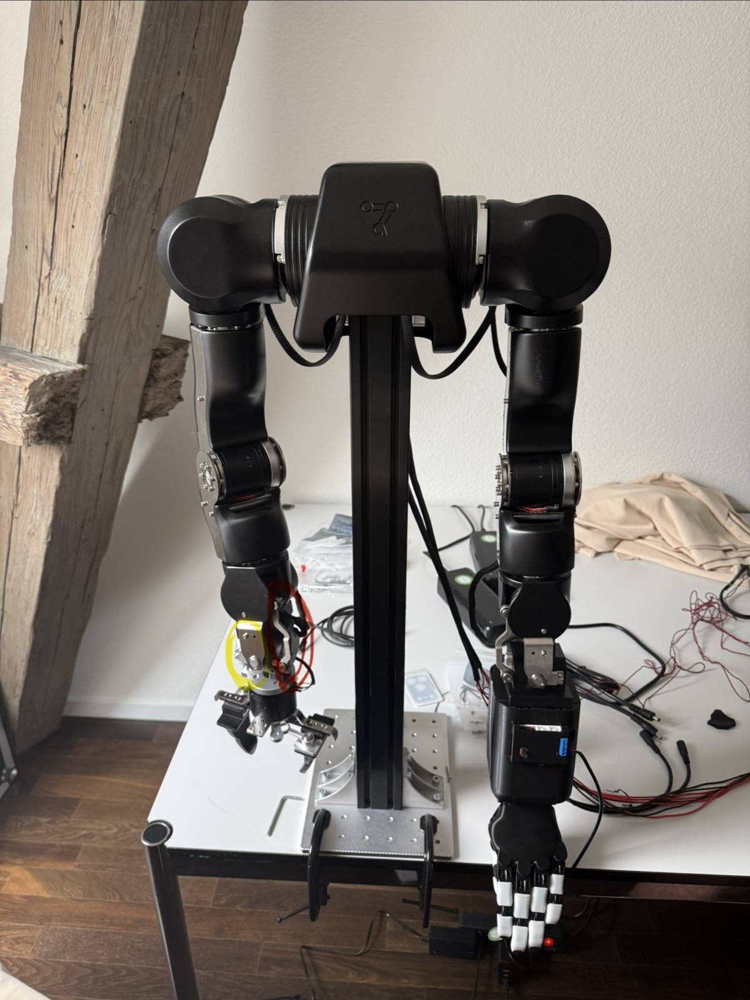
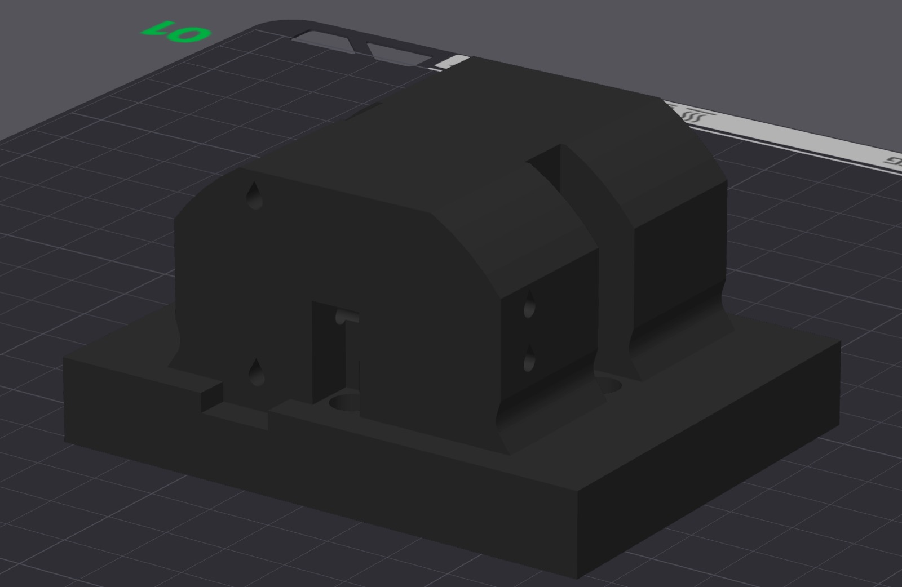
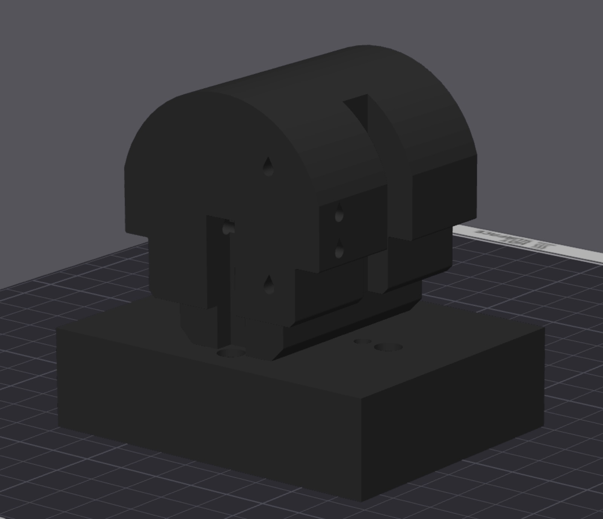
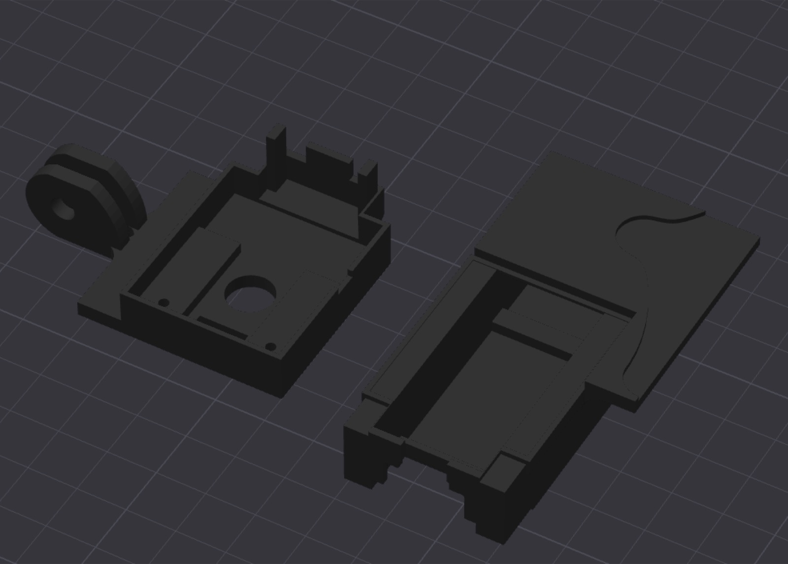
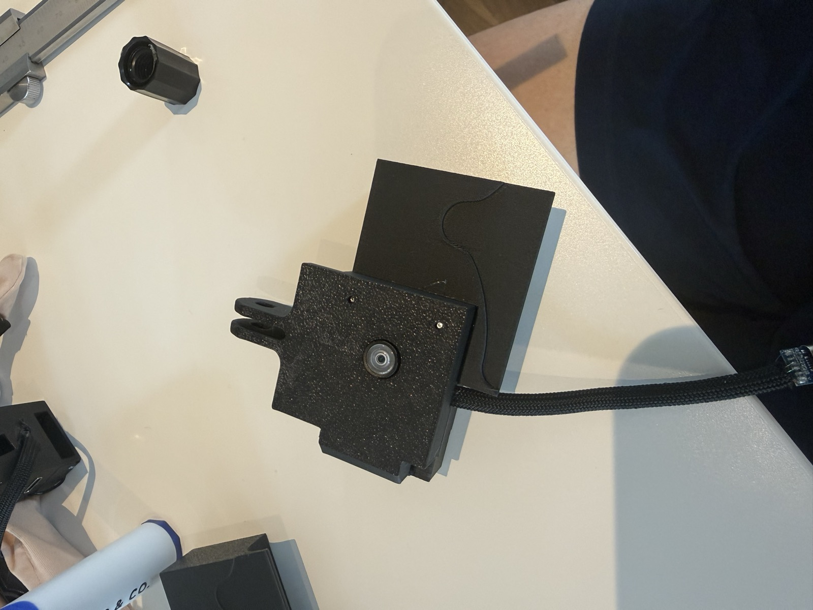
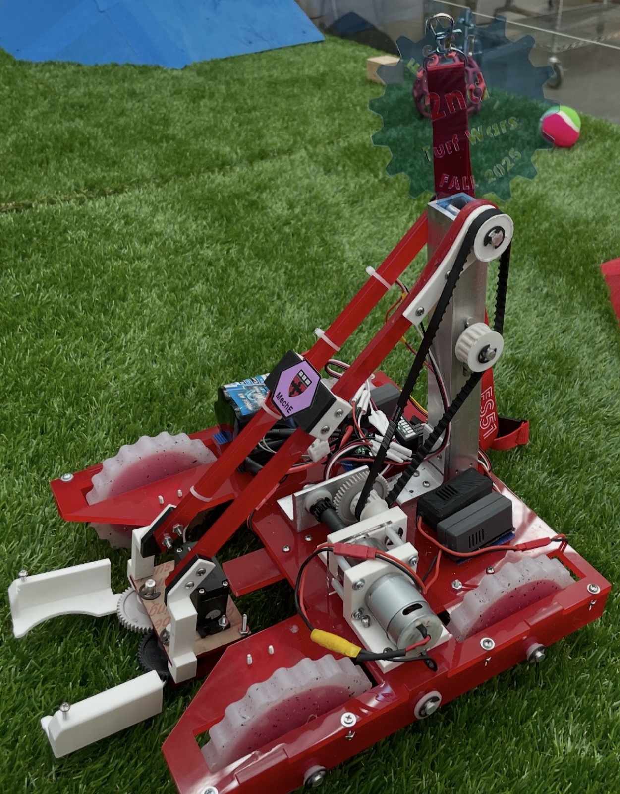
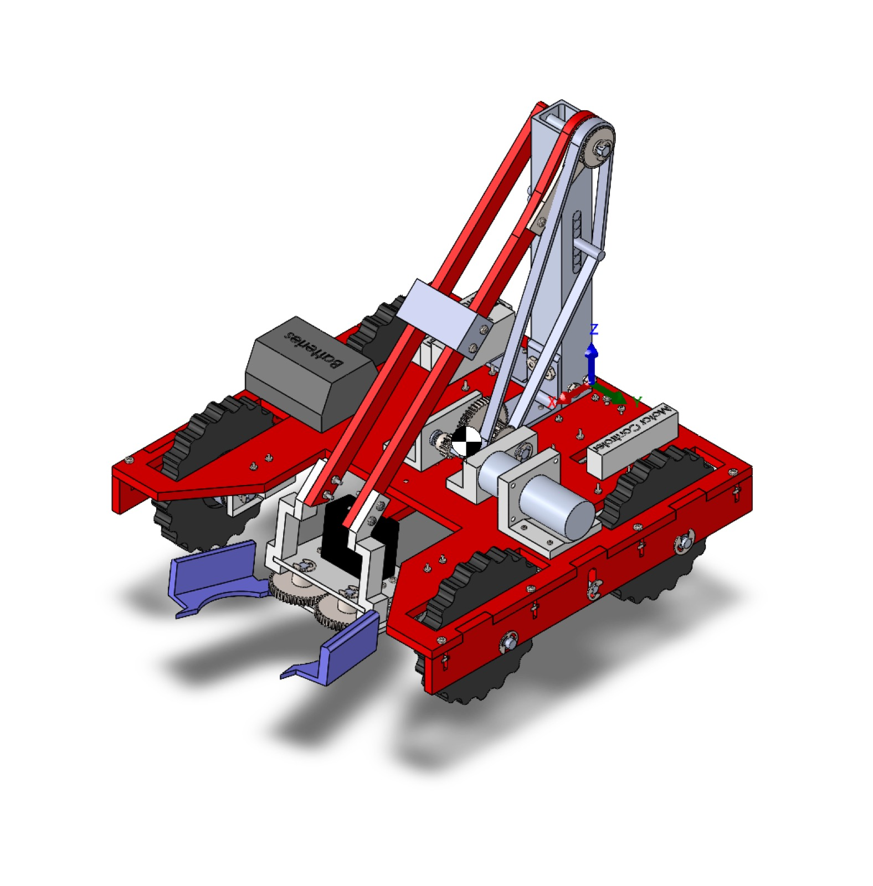

Hey, I'm William
My passion for engineering stems from the thought of being able to build whatever I want. I'm currently working on developing the skills that will improve my proficiency across all fields including mechancial, electrical, and software through classes and personal projects. My goal for this year is to become adept enough such that I am confident in building anything.

01 - About
Hello again! I'm William, a junior at Harvard College studying Mechanical Engineering S.B. My cardinal directions of life is learning, chaos, and entertainment - I know quite an interesting combination but I believe living life to the fullest means constantly learning new things and putting yourself in positions where you can discover new opportunities.
I recently had an extremely transformative summer, both in Zürich working at a robotics internship and in China teaching high school students nanotechnology and quantum computing. The TLDR of my realizations falls within two main facts: one, learning is a lifelong thing and should be something that you do forever and two, there are so many intersections between different subjects from how physics relates to electronics or how humanities (which is severely underrated!!) relates to robotics. I've since become way more academically inclined and as introduced in the title, more academically-oriented in building skills and perspectives across all domains, not just limited to STEM.
My main academic interests lie within automation. Having worked at a robotics startup and attended the World Robotics Conference 2026 held in Beijing, I've heard many experts and experienced first hand the bottlenecks in robotics & automation, especially in supply chain and manufacturing It draws to me because one, of the integrated systems between all aspects of engineering, and two, because of how big of an impact it will have on societies and how humans operate.
Outside of engineering, I like playing ultimate frisbee, biking, travelling, and spending time with friends. My favorite organizations on campus are HAUSCR, where I serve as the director for BPC, and AAB, where I serve as the President.
02 - Selected work
Cool things that I've made
Enjoy this compilation of projects I've done in the past, with the most interesting and relevant from this summer working in Zürich!
-

Why I built it - The ORCA hand and OpenArm were each capable on their own, but I needed them fused into one integrated arm-and-hand system to do fine, generalizable manipulation.
What I built & learned - I chose which OpenArm joint to remove (keeping 7 DOF, human proportions, and enough actuator power), merged the two URDFs and their inverse kinematics, and validated everything in MuJoCo before hardware. Along the way I learned how robots actually talk to each other via dora dataflows with YAML graphs, a per-machine daemon, and zero-copy Apache Arrow messages, and drove it all live with Meta Quest hand-tracking.
Why I built it - The ORCA hand and the OpenArm were already both open sourced platforms that one could perform teleoperation on before. However, in order to achieve fine manipulation for generalizable tasks, I needed to have a fully integrated upperbody and hand.
What I built & learned - The solution seemed simple at first -- simply connect the OpenArm to the Orca Hand. However, there were many important decisions and challenges such as deciding which part of the OpenArm to take off such that 7 degrees of freedom is still maintained, the arm length is matches a human, and also factors such as the weight distribution and comparison between the part taken off and the OrcaHand such that the actuators still have enough power to drive it. I have also included a before and after picture to the left.
Past these decisions, I primarily worked on integrating the URDFs and merging the inverse kinematics between the OpenArm and OrcaHand (also realized how important a linux system is in robotics haha). I operated off my mac via ssh through a linux kernal on PC, tested the hand and arm seperately on Mujoco to ensure the teleoperation works, and to avoid any singularities as the consequences would be dire. I learned a lot about joint/link positioning, meshes, the characteristics of URDFs that allow the simulations to accurately represent the live demonstration of the integrated system, as well as (I think the most important) how robotcs communicate with each other. I studied dora, and learned about YAML files (the entire dataflow exists there), how important daemon is as a centralized communication coordinator (as it is the point person for each node and exists per machine), and Apache Arrow for messages that the daemon directs to relevant nodes for communication through shared memory (since dora is zero-copy).
Another interesting issue was that when replacing the joint of the OpenArm with the Orca Hand, that specific joint was modelled as part of the arm inverse kinematics although it moved the OrcaHand controlled by feetech motors; this also contributed to the emphasis on testing in Mujoco.
The teleoperation was done via a metaquest, where there was a open-sourced program that could track your hands' landmarks. Overall, this project taught me how to write URDFs, how robots communicate (the daemon -> dora), the virtual testing environments, and many relevant concepts like ssh, CAN, and singularities.
-
Why I trained it - My first real machine-learning project: I trained an imitation-learning (ACT) policy in a few days, both to get software experience and to confirm our new OpenArm actually worked.
What I built & learned - I recorded demonstrations with LeRobot and studied how Action Chunking with Transformers really works - the CVAE encoder that learns a latent "style" variable (zeroed at deployment), the decoder that predicts action chunks from images and joint states, and temporal ensembling for smooth motion. I also learned how much data quality matters: consistent lighting, a fixed camera, and enough demonstrations (my gripper only behaved once I recorded longer, deliberate opens).
Why I trained it - This was my first real introduction to machine learning (imitation learning). I trained it within a few days for two reasons: one, I wanted experience on the software side; and two, I wanted to make sure the OpenArm we purchased was functional.
What I built & learned - This has been by far an extremely fruitful software expedition. In addition to recording data and following the LeRobot open-sourced tutorials for imitation learning, I also heavily researched how action chunking with transformers actually works.
I learned about the two transformer stages used in ACT. The first - the conditional variational autoencoder (CVAE) encoder - takes the joint positions and the demonstration's action sequence and outputs a mean and variance, which are sampled into a latent variable, z. That z captures the differences between demonstrations (the same task done slightly differently each time), so it's different for every recorded video. It is, however, important to stress that this encoder runs only during training: at deployment there are no future actions to encode - and you want one consistent motion rather than one variation of the motion - so z is fixed to 0, generalizing all learned deviations to one consistent motion. The second stage, the CVAE decoder, then takes the current joint positions and camera images (first run through a CNN) along with z, and emits the predicted action chunks. I also learned how important consistent lighting and a constant camera position were to the training data, since changing them (i.e. recording in the morning versus at night) would be detrimental.
In the end, temporal ensembling is performed, in which ACT averages the upcoming predicted steps with exponential weight on the more recent ones, producing smooth, jitter-free motion.
Specifically for my case, I initially had challenges with the OpenArm's gripper opening and closing: with only 70 demonstrations trained and very short gripper-open times, ACT treated it as a random deviation rather than a deliberate motion. I fixed it by adding more demonstrations in which I held the gripper open for at least 5 seconds.
-
Why I modified it - On first testing the ORCA hand, the thumb (the CNC joint) couldn't reach its full range and failed the Kapandji test, so I dug into the whole retargeting pipeline to fix it.
What I changed & learned - I had an in-depth overview of the entire path through chasing the entire coding infrastructure: the landmark ingress, the gradient-descent retargeter that minimizes the distance between your hand's keypoints and the robot's, and the sink to the motors. I then focused on the calibration step size: if it's too large and the fingers jitter, if it's too small and it can't keep up with live motion. I also learned how much the small things matter: a scaling factor for different hand sizes, matching units (degrees vs. radians), and the differences between Feetech and Dynamixel motors.
Why I modified it - After I tested the OrcaHand for the first time, I found that the thumb, specifically the CNC joint did not cover the full range of motion. For reference, the initial calibration and retargeting was not able to successfully pass the kapandji test. As a result, I looked into the entire pipeline of how the OrcaHand.
What I changed & learned - I spent a few days digging into the entire process in which the retargeter works. Through the ingress which essentially identifies landmarks on the hand via metaquest, mac camera, etc, the retargeter (the gradient descent process to minimze the distance between the captured finger landmarks and the keypoints on the human hand), and the sink that communicates the final positions to the motor, I got a comprehensive understanding of the entire process. The aspect I spent the most time on after this overall understanding was actually the algorithm the software used to find the max range of motion - specifically, the step size in the calibration. if it was too big, the solver would oveshoot and the fingers would jitter even if the human hand were stationary and if it were too small, it would not keep up with live motion and not calibrate the full range of motion.
Along the way, I also learned how much the little details matter such as having a scaling factor to normalize different people's hand sizes, making sure the units were the same (degrees vs. radians), and also the differences between motors such as feetech vs. dynamixel.
-


Why I built it - This was the central adapter that mounts the ORCA hand to the OpenArm - the top bolts to the arm, the bottom to the hand.
What I changed & learned - It took a lot of iteration; the final part is completely different from my first. I sized it for the hand's weight and shear stress (then shrank it so it didn't lengthen the arm too much), extruded the top so it wouldn't collide with the arm through its range of motion, made the screw holes teardrop-shaped to counter 3D-print droop, and added a chamfer to cut the stress concentration.
Why I built it - This piece is the central adapter piece between the OrcaHand and the OpenArm. I built it such that the top connects to the open arm and the bottom connects to the OrcaHand via threads and screw holes. The final piece is above and the initial piece was below.
The process & what I learned - This process required a lot of iteration - I think my biggest takeaway is how many small changes that 3D piece can have. Compared to the initial design, it's completely different. A few design considerations primarily included whether or not it could hold the weight of the OrcaHand and the shear stress the adapter piece would feel. My initial design was also way bigger because I initially wanted to maximize the area such that it would hold onto the piece better. However, after testing I reduced it since it made the arm length too big but still big enough to handle the stress from the weight of the OrcaHand.
Another change was extruding the top of the adapter more since it affected the range of motion (i.e. the top adapter would collide with the open arm). The holes designed for the screws were also designed like a teardrop since when 3D printing holes, the top droops so ever-slightly because of the printing orientation. Lastly, the final important change I made was adding a chamfer to the connection between the rectangle and the top to reduce the stress concentration.
-


Why I built it - SLAM needs an egocentric view, so I designed a mount for our ESP32-P4 Pico camera board (and a Sensoryx unit that measures head-to-wrist distance by ultrasound).
How I built it & what I learned - The board couldn't shift at all; any movement throws off the accelerometers and tracking that SLAM depends on. Thus, I designed a form-fit 3D-printed case. It took many iterations of tight tolerances (and finding the right cutting plane to fully enclose the board), and I was proudest of the clip-fit between the two halves.
Why I built it - Part of the goal to create a generalizable robot that could perform tasks is to apply SLAM, and in order to achieve that, there had to be an egocentric view. Hence, I designed a camera mount for our ESP32-P4 Pico board, as well as one for a Sensoryx - used to measure the distance from the head to the wrists via ultrasound.
How I built it & what I learned - The main problem statement was to build a case for the ESP32 board - but with the added constraint that the board must not move within it. This is extremely important because we also have accelerometers and positional tracking on the dev board, and any minute movement could throw off their calibration, which ultimately affects the SLAM being applied.
Hence, I developed a form-fit 3D-printed case (after building this, I fell in love with this design haha). It took many iterations, since the tolerances between each of the forms were so small. Finding the cutting plane of the 3D camera case was also very interesting - it was part of the initial visualization, since I had to find a way to fully enclose the ESP32 board.
In the end, I was very satisfied with this design - especially the clip-fit of the top piece onto the bottom piece (pushing it in, hearing the click, and seeing it stay).
-


Why I built it - For the ES-51 Turf Wars competition, my team built a robot to place as many objects as possible onto tiered shelves in a 3-minute match. We placed 2nd of 8.
What I built & learned - I fabricated parts across many processes (laser-cut acrylic, 3D-printed gears, a lathe-turned mast, wax-coated CNC-milled wheel molds) and led the development of the intake, which was a Pugh-matrix-selected lever-and-scoop with a 3D-printed gear train. Debugging its clicking and misalignment taught me to calculate loads and use GD&T up front instead of guessing.
Why I built it - For the ES-51 Turf Wars competition, my team had to design and build a robot that could precisely place the largest number of objects onto the corresponding tiered shelves within a 3-minute match. We placed 2nd out of 8 teams.
What I built & learned - Over the semester I learned how to produce a quality CAD model, fabricate parts, assemble mechanisms, and iterate on weekly test results. I manufactured components across a range of processes - laser-cut acrylic (baseplate and intake structure), 3D-printed gears (intake and gearbox), a lathe-turned mast and supports, and CNC-milled wheel molds that we coated in wax for extra traction - and integrated the motors and servos, working through the problems that surfaced during system integration.
I focused most on the intake. In planning, we compared several concepts - a forklift, a dump-truck, and a lever/arm - with a Pugh matrix, and chose a lever-and-scoop approach for the fastest acquisition and most efficient scoring. I built it from a 3D-printed gear train and laser-cut acrylic linkages, then iterated on the gearing and belt to raise pickup force (by increasing belt tension) and cut slippage. During testing the gears kept clicking and the gearbox was misaligned with the intake, which pushed me to actually calculate the loads before adjusting gear ratios and to design the alignment properly with GD&T. That one problem taught me how much the geometry and the path of force drive reliability.
Next time, I would measure the game piece's mass and size the torque/force requirements before selecting a concept - it would have shaped the whole intake decision from the start. I would also run basic stress checks on the linkages before cutting; our acrylic linkage failed in bending (brittle, and too thin), which cost us time and material.
03 - Contact
Let's chat!
I'm always down for a conversation about anything interesting! If you ever want to talk about robotics, a project you're excited about, personal philosophies, or travels, feel free to shoot me an email.